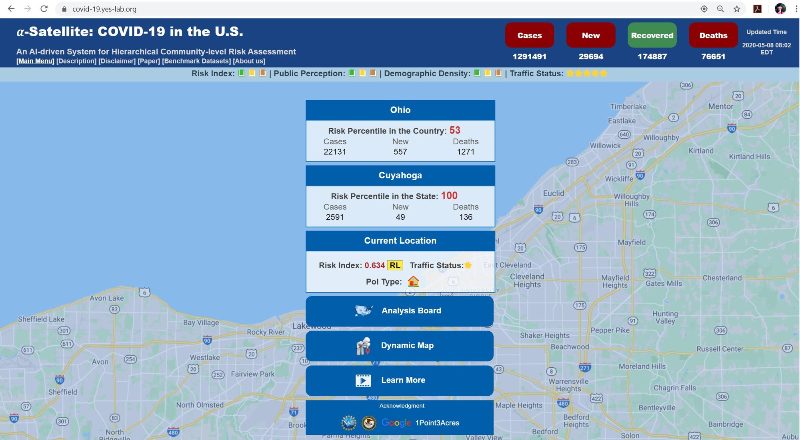

|
|
Research Interests
"Innovation, research and education - for a better world!"
I am currently the Collegiate Associate Professor of Computer Science and Engineering in the Department of Computer Science and Engineering (CSE) at the University of Notre Dame, and
Associate Director of Applied Analytics Research in Lucy Family Institute for Data & Society. Before joining Notre Dame, I was the Theodore L. and Dana J. Schroeder Associate Professor in the Department of Computer and Data Sciences (CDS) at Case Western Reserve University (CWRU). My research areas mainly include Cybersecurity, Data Mining, Machine Learning, and Health Intelligence. With long-term and strong collaboration with industry partners, I have advanced AI-driven innovations for cybersecurity, especially in the fields of malware detection and adversarial machine learning. My proposed and developed techniques have significantly reduced the time needed to detect new malicious software - from weeks to seconds, which have been incorporated into popular commercial cybersecurity products including Comodo and Kingsoft Antivirus that protect millions of users worldwide. In recent years, I have expanded my research on health intelligence with the focus on combating opioid crisis and infectious disease outbreaks. I have had over 120 publications in my fields (e.g., ACM CSUR, IEEE TNNLS, IEEE TKDE, IEEE TSMC, SIGKDD, ICDM, CIKM, WWW, NeurIPS, AAAI, IJCAI, USENIX Security, ACSAC). By working with my team, I have received the ACM CIKM 2021 Best Paper Award (Full Paper Track), the ACM CIKM 2021 Best Paper Award Runner Up (Applied Paper Track), the CSE Innovation Award (2020-2021) and the CSE Research Award (2019-2020) at CWRU, the MetroLab Innovation of the Month (2020), the NSF Career Award (2019), the IJCAI Early Career Spotlight (2019), the AICS 2019 Challenge Problem Winner, the ICDM 2018 Outstanding Service Award, the SIGKDD 2017 Best Paper Award and SIGKDD 2017 Best Student Paper Award (Applied Data Science Track), the IEEE EISIC 2017 Best Paper Award, and the New Researcher of the Year Award (2016-2017) at WVU. I have received multiple awards from the NSF and DoJ/NIJ in support of my research. All these awards are highly competitive.
 indicates the corresponding author.
indicates the corresponding author.
 Position Openings: To Perspective Students and Postdocs
Position Openings: To Perspective Students and Postdocs
-
I am currently looking for multiple Ph.D. students and Postdocs doing supervised research or independent study with me in the CSE department at Notre Dame. If you are a well motivated and dedicated student pursuing a Ph.D.
degree or postdoc related to the areas of Cybersecurity, Data Mining, Machine Learning, and Health Intelligence, please send me an email with your CV.
The postdocs will be provided competitive packages and the Ph.D. students will be provided research assistantships which cover the full cost of tuition and offer the full year (12 month/year) stipend and benefits. I will work with each postdoc or student to identify the most suitable topic based on his/her academic interests and background. I will also help the post-doc or student to build his/her strong capability and publication record as well as the career development with a good timing. I very much enjoy working with each member in my group and take each postdoc or student as a friend and a collaborator. Doing research is to build an enjoyable career and have fun.
My expectations on perspective Ph.D. students are: (1) honest, diligent, intelligent, and easy-going personality; (2) strong research potential, programming capability, mathematical background; and (3) dedicated to research and willing to publish in prestigious forums. The minimum requirements for Ph.D. students are: B.S. in Computer Science (applicants with a master degree will be preferred), or related fields, and other general admission requirements.
alpha-Satellite: Help Combat COVID-19 in the U.S.
An AI-driven System for Real-time COVID-19 Risk Assessment
- The novel coronavirus and its deadly outbreak have posed grand challenges to human society; the World Health Organization (WHO) characterized coronavirus disease (COVID-19) a global pandemic. A growing number of areas reporting local sub-national community transmission would represent a significant turn for the worse in the battle against the novel coronavirus, which points to an urgent need for expanded surveillance so we can better understand the spread of COVID-19 and thus better respond with actionable strategies for community mitigation. By advancing capabilities of artificial intelligence (AI) and leveraging the large-scale and real-time data generated from heterogeneous sources, as an initial offering, we have proposed and developed an AI-driven system (named alpha-Satellite) since early pandemic, to provide hierarchical community-level risk assessment to assist with the development of strategies for combating the fast evolving COVID-19 pandemic. More specifically, given a specific location (either user input or automatic positioning), the developed system will automatically provide risk indices associated with it in a hierarchical manner (e.g., state, county, specific location) to enable individuals to select appropriate actions for protection while minimizing disruptions to daily life to the extent possible. After we launched our system for public tests, it has had 500,321 users as of June 29, 2022. The large number of its users indicate the high demand from the public for effective computational tools to assist people with actionable strategies. The system has receiving a lot of good feedback from the media (e.g., WKYC, Ideastream, NPR, Fox8, WTAM, GovTech, etc.) and users on the ease of use as well as the utility of dynamic risk estimations. The developed system, paper and the generated benchmark datasets have been made publicly accessible through our website.
[System] [Paper] [Bib] [Benchmark Datasets]
Yanfang Ye ( ), Shifu Hou, Yujie Fan, Yiyue Qian, Yiming Zhang, Shiyu Sun, Qian Peng, Kenneth Laparo. "alpha-Satellite: An AI-driven System and Benchmark Datasets for Hierarchical Community-level Risk Assessment to Help Combat COVID-19", arXiv preprint arXiv:2003.12232, 2020.
[System] [Paper] [Bib]
[Benchmark Datasets]
News
- Our paper entitiled "Disentangled Heterogeneous Dynamic Graph Learning for Opioid Overdose Predictio" won the ACM SIGKDD 2022 Best Paper Award Shortlist (Research Track). Congratulations to our team!
- Our paper entitiled "RxNet: Rx-refill Networks for Overprescribing Prediction" recently received the ACM CIKM 2021 Best Paper Award (Full Paper Track). Congratulations to our team!
- Our paper entitiled "Detection of Illicit Drug Trafficking Events on Instagram: A Deep Multimodal Multi-label Learning Approach" recently received the ACM CIKM 2021 Best Paper Award Runner Up (Applied Paper Track). Congratulations to our team! Thank my collabrators!
- To help combat the prolonged pandemic that has exposed vulnerabilities impacting community resilience, we have proposed and developed an integrated framework (named Dr.Emotion) to learn disentangled representations of social media posts (i.e., tweets) for emotion analysis and thus to gain deep insights into public perceptions towards COVID-19. Based on the developed Dr.Emotion, additional work can be conducted to extract and transform the constructive ideas, experiences and support into actionable information to improve community resilience in responses to a variety of crises created by the global pandemic and well beyond. Our work has been published in WWW'2021 and won the WWW 2021 Best Paper Award Shortlist.
- In early pandemic, we have proposed and developed an AI-driven system, named alpha-Satellite, to provide hierarchical community-level risk assessment to assist with the development of strategies for community mitigation. The developed system, paper and the generated benchmark datasets have been made publicly accessible through our website. The work received the MetroLab Innovation of the Month (May 2020).
- Our paper entitiled "Enhancing Robustness of Deep Neural Networks Against Adversarial Malware Samples: Principles, Framework, and Application to AICS'2019 Challenge" received the AAAI Workshop on Artificial Intelligence for Cyber Security Challenge Problem Winner. Thank my collabrators! Congratulations to our team!
- Our paper entitiled "Adversarial Machine Learning in Malware Detection: Arms Race between Evasion Attack and Defense" received the IEEE EISIC 2017 Best Paper Award. Congratulations to our team! Congratulations to my student Lingwei Chen!
- Our paper received the SIGKDD 2017 Best Paper Award and the SIGKDD 2017 Best Student Paper Award (Applied Data Science Track). Congratulations to our team for the SIGKDD 2017 Best Paper Award! Congratulations to my student Shifu Hou for the SIGKDD 2017 Best Student Paper Award! Our video won SIGKDD 2017 Audience Appreication Award Finalist (26,033 views on YouTube).
Shifu Hou, Yanfang Ye ( ), Yangqiu Song, Melih Abdulhayoglu. "HinDroid: An Intelligent Android Malware Detection System Based on Structured Heterogeneous Information Network", Proceedings of ACM International Conference on Knowledge Discovery and Data Mining (ACM SIGKDD) , 2017. (Download paper here; Download slides here; and Click this link to watch the video)
Selected Publications
* indicates that the author is my student/post-doc;Book Chapters
- Yanfang Ye. "Intelligent Malware Detection by Applying Data Mining Techniques", In T. Li eds., Data Mining Where Theory Meets Practice, Xiamen University Press, 2013, ISBN 978-7-5615-4294-1.
Journal Publications
- Chuanbo Hu, Bin Liu, Yanfang Ye, Xin Li. "Fine-grained Classification of Drug Trafficking Based on Instagram Hashtags", Decision Support Systems, 2023.
- Xiao Wang, Deyu Bo, Chuan Shi, Shaohua Fan, Yanfang Ye, Phillip Yu. "A Survey on Heterogeneous Graph Embedding: Methods, Techniques, Applications and Sources", IEEE Transactions on Big Data (IEEE TBD), 2022.
- Deqiang Li, Qianmu Li, Yanfang Ye, Shouhuai Xu. "Arms Race in Adversarial Malware Detection: A Survey", ACM Computing Surveys (ACM CSUR), 2021.
- Chuanbo Hu, Minglei Zhang, Bin Liu, Xin Li, Yanfang Ye. "Identifying Illicit Drug Dealers on Instagram with Large-scale and Multimodal Data Fusion", ACM Transactions on Intelligent Systems and Technology (ACM TIST), 2021.
- Deqiang Li, Qianmu Li, Yanfang Ye, Shouhuai Xu. "A Framework for Enhancing Deep Neural Networks against Adversarial Malware", IEEE Transactions on Network Science and Engineering (IEEE TNSE), 2021.
- Yanfang Ye (), Yujie Fan*, Shifu Hou*, Yiming Zhang*, Yiyue Qian*, Shiyu Sun*, Qian Peng*, Mingxuan Ju*, Wei Song, Kenneth Loparo. "a-Satellite: An AI-driven System and Benchmark Datasets for Dynamic COVID-19 Risk Assessment in the United States", IEEE Journal of Biomedical and Health Informatics (IEEE J-BHI), 2020. MetroLab Innovation of the Month.
- Jianfei Zhang*, Lifei Chen, Yanfang Ye, Gongde Guo, Rongbo Chen, Alain Vanasse, Shengrui Wang. "Survival Neural Networks for Time-to-event Prediction in Longitudinal Study", Knowledge and Information Systems (KAIS), 2020.
- Liang Zhao, Feng Chen, Yanfang Ye. "Efficient Learning with Exponentially-Many Conjunctive Precursors for Interpretable Spatial Event Forecasting", IEEE Transactions on Knowledge and Data Engineering (IEEE TKDE), 2019.
- Qingzhe Li, Amir Alipour-Fanid, Martin Slawski, Yanfang Ye, Lingfei Wu, Kai Zeng, Liang Zhao. "Large-scale Cost-aware Classification Using Feature Computational Dependencies", IEEE Transactions on Knowledge and Data Engineering (IEEE TKDE), 2019.
- Junxiang Wang, Liang Zhao, Yanfang Ye, Yuji Zhang. "Adverse Event Detection by Integrating Twitter Data and VAERS", Journal of Biomedical Semantics (JBS), 9(19), 2018.
- Yanfang Ye, Tao Li, Donald Adjeroh, S. Sitharama Iyengar. "A Survey on Malware Detection Using Data Mining Techniques", ACM Computing Surveys (ACM CSUR), Vol. 50, Issue 3, Article No. 41, 2017.
- Yanfang Ye (), Lingwei Chen*, Shifu Hou*, William Hardy*, Xin Li. "DeepAM: A Heterogeneous Deep Learning Framework for Intelligent Malware Detection", Knowledge and Information Systems (KAIS), Vol. PP (52): 1~21, 2017.
- Gongde Guo, Lifei Chen, Yanfang Ye, Qingshan Jiang. "Cluster Validation Method for Determining the Number of Clusters in Categorical Sequences", IEEE Transactions on Neural Networks and Learning Systems (IEEE TNNLS), Vol. PP (99): 1-13, 2016.
- Ming Ni, Tao Li, Qianmu Li, Hong Zhang, Yanfang Ye, Qingshan Jiang. "FindMal: A File-to-file Social Network Based Malware Detection Framework", Knowledge-Based Systems (KBS), 112: 142-151, 2016.
- Yujie Fan*, Yanfang Ye, Lifei Chen. "Malicious Sequential Pattern Mining for Automatic Malware Detection", Expert Systems with Applications (ESWA), Vol. 52, pp. 16~25, 2016.
- Yanfang Ye (), Tao Li, Haiyin Shen. "Soter: Smart Bracelets for Children's Safety", ACM Transactions on Intelligent Systems and Technology (ACM TIST), Vol.6, No. 4, Article 46, 2015.
- Lifei Chen, Yanfang Ye, Gongde Guo, Jianping Zhu. "Kernel-based linear classification on categorical data", Soft Computing, pp. 1~13, 2015.
- Weiwei Zhuang, Yanfang Ye, Yong Chen, Tao Li. "Ensemble Clustering for Internet Security Applications", IEEE Transactions on Systems, Man and Cybernetics-Part C: Applications and Reviews (IEEE TSMC), Vol 42, pp. 1784~1796, 2012.
- Weiwei Zhuang, Yanfang Ye, Tao Li, Qingshan Jiang. "Intelligent phishing website detection using classification ensemble", Systems Engineering - Theory & Practice, Vol. 31, issue (10): 2008-2020, 2011.
- Yanfang Ye, Tao Li, Qingshan Jiang, Youyu Wang. "CIMDS: Adapting post-processing techniques of associative classification for malware detection system", IEEE Transactions on Systems, Man and Cybernetics-Part C: Applications and Reviews (IEEE TSMC), Vol 40, pp. 298~307, 2010.
- Yanfang Ye, Lifei Chen, Dingding Wang, Tao Li, Qingshan Jiang, Min Zhao. "SBMDS: an interpretable string based malware detection system using SVM ensemble with bagging", Journal in Computer Virology (JCV), Vol 5, pp. 283~293, 2009.
- Yanfang Ye, Tao Li, Kai Huang, Qingshan Jiang, Yong Chen. "Hierarchical Associative Classifier (HAC) for Malware Detection from the Large and Imbalanced Gray List", Journal of Intelligent Information Systems (JIIS), Vol 35, pp. 1~20, 2009.
- Weiwei Zhuang, Yanfang Ye, Qingshan Jiang, Zhixue Han. "Application of Incremental Associative Classification Method in Malware Detection", Computer Engineering, 35 (4): 159-161, 2009.
- Yanfang Ye, Dingding Wang, Tao Li, Dongyi Ye, Qingshan Jiang. "An Intelligent PE-Malware Detection System Based on Association Mining", Journal in Computer Virology (JCV), Vol 4, pp. 323~334, 2008.
Conference Publications
- Jianan Zhao*, Qianlong Wen*, Mingxuan Ju*, Chuxu Zhang, Yanfang Ye (). "Self-Supervised Graph Structure Refinement for Graph Neural Networks", The 16th ACM International WSDM Conference (WSDM), 2023. (17.8% acceptance rate)
- Qianlong Wen*, Zhongyu Ouyang*, Jianfei Zhang*, Yiyue Qian*, Yanfang Ye (), Chuxu Zhang. "Disentangled Heterogeneous Dynamic Graph Learning for Opioid Overdose Prediction", International Conference on Knowledge Discovery and Data Mining (ACM SIGKDD), 2022. SIGKDD 2022 Best Paper Award Shortlist (Research Track). (15% acceptance rate)
- Yiyue Qian*, Yiming Zhang*, Qianlong Wen*, Yanfang Ye (), Chuxu Zhang. "Repository Embedding via Heterogeneous Graph Adversarial Contrastive Learning", International Conference on Knowledge Discovery and Data Mining (ACM SIGKDD), 2022. (15% acceptance rate)
- Mingxuan Ju*, Shifu Hou*, Yujie Fan*, Jianan Zhao*, Yanfang Ye (), Liang Zhao. "Adaptive Kernel Graph Neural Network", 36th AAAI Conference on Artificial Intelligence (AAAI), 2022. (15% acceptance rate)
- Yiyue Qian*, Chunhui Zhang, Yiming Zhang*, Qianlong Wen*, Yanfang Ye (), Chuxu Zhang. "Co-Modality Imbalanced Graph Contrastive Learning", Thirty-sixth Conference on Neural Information Processing Systems (NeurIPS), 2022. (25.6% acceptance rate)
- Yujie Fan*, Mingxuan Ju*, Chuxu Zhang, Yanfang Ye (). "Heterogeneous Temporal Graph Neural Network", SIAM International Conference on Data Mining (SIAM SDM), 2022. (27.8% acceptance rate)
- Yiming Zhang*, Yiyue Qian*, Yanfang Ye (), Chuxu Zhang. "Adapting Distilled Knowledge for Few-Shot Relation Reasoning over Knowledge Graphs", SIAM International Conference on Data Mining (SIAM SDM), 2022. (27.8% acceptance rate)
- Pengcheng Fang, Peng Gao, Changlin Liu, Erman Ayday, Kangkook Jee, Ting Wang, Yanfang Ye, Zhuotao Liu, Xusheng Xiao. "Back-Propagating System Dependency Impact for Attack Investigation", Thirty-first USENIX Security Symposium (USENIX Security), 2022. (less than 20% acceptance rate)
- Jianfei Zhang*, Ai-Te Kuo, Jianan Zhao*, Qianlong Wen*, Erin Winstanley, Chuxu Zhang, Yanfang Ye (). "RxNet: Rx-refill Networks for Overprescribing Prediction", International Conference on Information and Knowledge Management (CIKM), 2021. CIKM 2021 Best Paper Award. (21.7% acceptance rate for full paper)
- Chuanbo Hu, Minglei Yin, Bin Liu, Xin Li, Yanfang Ye. "Detection of Illicit Drug Trafficking Events on Instagram: A Deep Multimodal Multi-label Learning Approach", International Conference on Information and Knowledge Management (CIKM), 2021. CIKM 2021 Best Paper Award Runner Up. (24% acceptance rate for applied track)
- Mingxuan Ju*, Wei Song, Shiyu Sun*, Yanfang Ye (), Yujie Fan*, Shifu Hou*, Kenneth Loparo, Liang Zhao. "Dr.Emotion: Disentangled Representation Learning for Emotion Analysis on Social Media to Improve Community Resilience in the COVID-19 Era and Beyond", The Web Conference (WWW), 2021. WWW 2021 Best Paper Award Shortlist. (20.6% acceptance rate).
- Yujie Fan*, Mingxuan Ju*, Shifu Hou*, Yanfang Ye (), Wenqiang Wan, Kui Wang, Yinming Mei, Qi Xiong. "Heterogeneous Temporal Graph Transformer: An Intelligent System for Evolving Android Malware Detection", International Conference on Knowledge Discovery and Data Mining (ACM SIGKDD), 2021. (19.6% acceptance rate)
- Yiyue Qian*, Yiming Zhang*, Yanfang Ye (), Chuxu Zhang. "Adapting Meta Knowledge with Heterogeneous Information Network for COVID-19 Themed Malicious Repository Detection", 30th International Joint Conference on Artificial Intelligence (IJCAI), 2021. (13.9% acceptance rate)
- Shifu Hou*, Yujie Fan*, Mingxuan Ju*, Yanfang Ye (), Wenqiang Wan, Kui Wang, Yinming Mei, Qi Xiong, Fudong Shao. "Disentangled Representation Learning in Heterogeneous Information Network for Large-scale Android Malware Detection in the COVID-19 Era and Beyond", 35th AAAI Conference on Artificial Intelligence (AAAI), 2021. (21% acceptance rate)
- Yiyue Qian*, Yiming Zhang*, Yanfang Ye (), Chuxu Zhang. "Distilling Meta Knowledge on Heterogeneous Graph for Illicit Drug Trafficker Detection on Social Media", Thirty-fifth Conference on Neural Information Processing Systems (NeurIPS), 2021. (26% acceptance rate)
- Jianan Zhao*, Qianlong Wen*, Shiyu Sun*, Yanfang Ye (), Chuxu Zhang. "Multi-View Self-Supervised Heterogeneous Graph Embedding", European Conference on Machine Learning and Principles and Practice of Knowledge Discovery in Databases (ECML-PKDD), 2021. (21% acceptance rate)
- Yanfang Ye (), Yujie Fan*, Shifu Hou*, Yiming Zhang*, Yiyue Qian*, Shiyu Sun*, Qian Peng*, Mingxuan Ju*, Wei Song, Kenneth Loparo. "Community Mitigation: A Data-driven System for COVID-19 Risk Assessment in a Hierarchical Manner", International Conference on Information and Knowledge Management (CIKM), 2020.
- Yujie Fan*, Yanfang Ye (), Qian Peng*, Jianfei Zhang*, Yiming Zhang*, Xusheng Xiao, Chuan Shi, Qi Xiong, Fudong Shao, Liang Zhao. "Metagraph Aggregated Heterogeneous Graph Neural Network for Illicit Traded Product Identification in Underground Market", IEEE International Conference on Data Mining (ICDM), 2020. (full paper acceptance rate of 9.8%)
- Jianan Zhao, Xiao Wang, Chuan Shi, Zekuan Liu, Yanfang Ye. "Network Schema Preserved Heterogeneous Information Network Embedding", 29th International Joint Conference on Artificial Intelligence (IJCAI), 2020. (12.6% acceptance rate)
- Yiming Zhang*, Yiyue Qian*, Yujie Fan*, Yanfang Ye (), Xin Li, Qi Xiong, Fudong Shao. "dStyle-GAN: Generative Adversarial Network based on Writing and Photography Styles for Drug Identification in Darknet Markets", Annual Computer Security Applications Conference (ACSAC), 2020. (23% acceptance rate)
- Yujie Fan*, Yiming Zhang*, Shifu Hou*, Lingwei Chen*, Yanfang Ye (), Chuan Shi, Liang Zhao, Shouhuai Xu. "iDev: Enhancing Social Coding Security by Cross-platform User Identification Between GitHub and Stack Overflow", 28th International Joint Conference on Artificial Intelligence (IJCAI), 2019. (17.9% acceptance rate)
- Yanfang Ye (), Shifu Hou*, Lingwei Chen*, Jingwei Lei, Wenqiang Wan, Jiabin Wang, Qi Xiong, Fudong Shao. "Out-of-sample Node Representation Learning for Heterogeneous Graph in Real-time Android Malware Detection", 28th International Joint Conference on Artificial Intelligence (IJCAI), 2019. (17.9% acceptance rate)
- Xiao Wang, Houye Ji, Chuan Shi, Bai Wang, Peng Cui, Yanfang Ye. "Heterogeneous Graph Attention Network", The Web Conference (WWW), 2019. (18% acceptance rate for regular paper)
- Yiming Zhang*, Yujie Fan*, Wei Song, Shifu Hou*, Yanfang Ye (), Xin Li, Liang Zhao, Chuan Shi, Jiabin Wang, Qi Xiong. "Your Style Your Identity: LeveragingWriting and Photography Styles for Drug Trafficker Identification in Darknet Markets over Attributed Heterogeneous Information Network", The Web Conference (WWW), 2019. (20% acceptance rate for short paper)
- Qingzhe Li, Liang Zhao, Yi-Ching Lee, Yanfang Ye, Jessica Lin, Lingfei Wu. "Contrast Feature Dependency Pattern Mining for Controlled Experiments with Application to Driving Behavior", 19th IEEE International Conference on Data Mining (ICDM), 2019. (18.5% acceptance rate)
- Yiming Zhang*, Yujie Fan*, Yanfang Ye (), Liang Zhao, Chuan Shi. "Key Player Identification in Underground Forums over Attributed Heterogeneous Information Network Embedding Framework", International Conference on Information and Knowledge Management (CIKM), 2019. (19.4% acceptance rate)
- Shifu Hou*, Yujie Fan*, Yiming Zhang*, Yanfang Ye (), Jingwei Lei, Wenqiang Wan, Jiabin Wang, Qi Xiong, Fudong Shao. "aCyber: Enhancing Robustness of Android Malware Detection System against Adversarial Attacks on Heterogeneous Graph based Model", International Conference on Information and Knowledge Management (CIKM), 2019. (19.4% acceptance rate)
- Yuyang Gao, Liang Zhao, Lingfei Wu, Yanfang Ye, Hui Xiong, Chaowei Yang. "Incomplete Label Multi-task Deep Learning for Spatio-temporal Event Subtype Forecasting", 33rd AAAI Conference on Artificial Intelligence (AAAI), 2019. (16.7% acceptance rate)
- Deqiang Li, Qianmu Li, Yanfang Ye, Shouhuai Xu. "Enhancing Robustness of Deep Neural Networks Against Adversarial Malware Samples: Principles, Framework, and Application to AICS'2019 Challenge", AAAI Workshop on Artificial Intelligence for Cyber Security (AICS), 2019. AICS 2019 Challenge Problem Winner.
- Yujie Fan*, Shifu Hou*, Yiming Zhang*, Yanfang Ye (), Melih Abdulhayoglu. "Gotcha - Sly Malware! Scorpion: A Metagraph2vec Based Malware Detection System", Proceedings of ACM International Conference on Knowledge Discovery and Data Mining (ACM SIGKDD), 2018. (22.5% acceptance rate)
- Yujie Fan*, Yiming Zhang*, Yanfang Ye (), Xin Li. "Automatic Opioid User Detection from Twitter: Transductive Ensemble Built on Different Meta-graph Based Similarities over Heterogeneous Information Network", 27th International Joint Conference on Artificial Intelligence (IJCAI), 2018. (20.5% acceptance rate)
- Junxiang Wang, Liang Zhao, Yanfang Ye. "Semi-supervised Multi-instance Learning for Flu Shot Adverse Event Detection", IEEE international conference on Big Data (BigData), 2018. (18.9% acceptance rate)
- Yanfang Ye (), Shifu Hou*, Lingwei Chen*, Xin Li, Liang Zhao, Shouhuai Xu, Jiabin Wang, Qi Xiong. "ICSD: An Automatic System for Insecure Code Snippet Detection in Stack Overflow over Heterogeneous Information Network", Annual Computer Security Applications Conference (ACSAC), 2018. (20.1% acceptance rate)
- Shifu Hou*, Yanfang Ye (), Yangqiu Song, Melih Abdulhayoglu. "HinDroid: An Intelligent Android Malware Detection System Based on Structured Heterogeneous Information Network", Proceedings of ACM International Conference on Knowledge Discovery and Data Mining (ACM SIGKDD), 2017. SIGKDD 2017 Best Paper Award and SIGKDD 2017 Best Student Paper Award (Applied Data Science Track). (9.2% acceptance rate for oral)
SIGKDD 2017 Audience Appreciation Award Finalist: 26,033 views on YouTube. - Lingwei Chen*, Shifu Hou*, Yanfang Ye (). "SecureDroid: Enhancing Security of Machine Learning-based Detection against Adversarial Android Malware Attacks", Annual Computer Security Applications Conference (ACSAC), 2017. (19.7% acceptance rate)
- Lingwei Chen*, Yanfang Ye (), Thirimachos Bourlai. "Adversarial Machine Learning in Malware Detection: Arms Race between Evasion Attack and Defense", IEEE European Intelligence and Security Informatics Conference (EISIC), 2017. IEEE EISIC 2017 Best Paper Award. (~25% acceptance rate)
- Yujie Fan*, Yiming Zhang*, Yanfang Ye (), Xin Li, Wanhong Zheng. "Social Media for Opioid Addiction Epidemiology: Automatic Detection of Opioid Addicts from Twitter and Case Studies", ACM International Conference on Information and Knowledge Management (CIKM), 2017. (~20% acceptance rate)
- Yanfang Ye, Tao Li, Shenghuo Zhu, Weiwei Zhuang, Egemen Tas, Umesh Gupta, Melih Abdulhayoglu. "Combining File Content and File Relations for Cloud Based Malware Detection", Proceedings of ACM International Conference on Knowledge Discovery and Data Mining (ACM SIGKDD) , pp. 222~230, 2011. (8% acceptance rate for oral)
- Yanfang Ye, Tao Li, Yongchen, Qingshan Jiang. "Automatic Malware Categorization Using Cluster Ensemble", Proceedings of ACM International Conference on Knowledge Discovery and Data Mining (ACM SIGKDD) , pp. 95~104, 2010. (10.9% acceptance rate for oral)
- Yanfang Ye, Tao Li, Qingshan Jiang, Zhixue Han, Li Wan. "Intelligent File Scoring System for Malware Detection from the Gray List", Proceedings of ACM International Conference on Knowledge Discovery and Data Mining (ACM SIGKDD) , pp. 1385~1394, 2009. (9.8% acceptance rate for oral)
- Yanfang Ye, Dingding Wang, Tao Li, Dongyi Ye. "IMDS: Intelligent Malware Detection System", Proceedings of ACM International Conference on Knowledge Discovery and Data Mining (ACM SIGKDD) , pp. 1043~1047, 2007. (17.9% acceptance rate)
Postdocs
- Shifu Hou (Postdoc, Summer 2022 -- )
- Fangtian Zhong (Postdoc, Fall 2022 -- )
Current Students
- Yiming Zhang (Ph.D. Student, Fall 2016 -- Fall 2022)
- Yiyue Qian (Ph.D. Student, Fall 2019 -- )
- Hadeel Almaimani (Ph.D. Student, Fall 2019 -- )
- Mingxuan Ju (Ph.D. Student, Summer 2020 -- )
- Qianlong Wen (Ph.D. Student, Fall 2020 -- )
- Zhongyu Ouyang (Ph.D. Student, Fall 2021 -- )
- Tianyi Ma (Ph.D. Student, Fall 2022 -- )
- Shang Ma (Ph.D. Student, Fall 2022 -- )
- Haoran Chen (Ph.D. Student, Fall 2022 -- )
Graduated Students and Postdocs
- Jianfei Zhang (Postdoc, Fall 2019 - Fall 2020)
- Shifu Hou (Ph.D., June 2022)
- Yujie Fan (Ph.D., May 2022)
- Lingwei Chen (Ph.D., May 2019)
- Qian Peng (MS, June 2022)
- Shiyu Sun (MS, June 2021)
- Shifu Hou (MS, June 2019)
- Yiming Zhang (MS, December 2018)
- Jian Liu (MS, June 2018)
- Sai Venkata Akhil Thammineni (MS, November 2017)
- Srinivas Garapati, MS (MS, October 2017)
- Utsav Kirtikumar Upadhyay (MS, September 2017)
- Madhusudhan Reddy Boddu (MS, March 2017)
- Sai Ram Nellutla (MS, December 2015)
- Dominique Amos (BS, December 2015)
- Alex Finkelstein (BS, May 2015)
- Kevin Hao (BS, May 2015)
- Michael Hite (BS, May 2015)
- Joshua Suess (BS, May 2015)
- Jacob Sutton (BS, May 2015)
- Sam Wood (BS, May 2015)
- Reem AL Alshikh (BS, May 2015)
- Zainab Alamri (BS, May 2015)
Former Students
- Jianan Zhao (Ph.D. Student, Fall 2020 - Summer 2022)
- Aaron G. Saas (Ph.D. Student, Spring 2016 - Summer 2019)
- Madhuri Siddula (Ph.D. Student, Spring 2015 - Summer 2016)
- William B. Hardy (MS Student, Spring 2015 - Summer 2017)
Teaching
- CSE 60745: Graph Learning: Techniques & Applications [Fall 2022]
Lectures: M/W 2:00pm -- 3:15pm (DeBartolo Hall 208)
- CSE 40567/60567: Computer Security [Spring 2022]
- CSDS 435: Data Mining [Spring 2021]
-
EECS/CSDS 600: CyberAI: AI in Cybersecurity [Spring 2021, Spring 2020]
-
EECS 349/444: Computer Security [Fall 2019]
-
CS 573: Advanced Data Mining [Fall 2018, Spring 2017, Spring 2016, Spring 2015]
-
CS 467: Practicing Cybersecurity: Attacks and Countermeasures [Spring 2019, Spring 2018]
-
CS 569: Cybersecurity and Big Data Analytics [Fall 2017, Fall 2016, Fall 2015, Fall 2014]
- CS 426: Discrete Mathematics [Spring 2014]